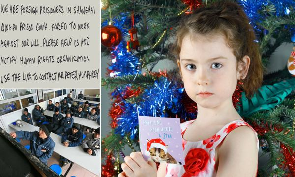

2019-12-25 04:43:00
三天前，一則新聞出現在英國的所有主流媒體上，隨即得到全球性的轉載，其後《BBC》和《Guardian》等等都一再追蹤報導（例如https://www.bbc.com/news/uk-50883161）。故事說在倫敦南郊的Tooting鎮，有一個六歲的小女孩，名叫Florence Widdicombe，她到Tesco超級市場去買了一張賀卡，回家後發現卡裏已經寫滿了英文的信息（參見下圖），聲稱是一群被關在上海青浦監獄的外國人，因爲受到非人道的待遇，包括强制無償為製造卡片加工，所以冒險對外求救，希望拿到卡片的人聯絡已經出獄的一個英國籍難友，發動國際力量來拯救他們於水火之中。

這則消息最早來自一個自由記者（Freelance Reporter），叫做Peter Humphrey，他有個中文名字，叫“韓飛龍”。很巧的是，他就是前面提到的英國籍難友，求救信的收信人。他娶了一個中國太太，曾在大陸工作很多年。雖然名片上寫的職業是記者，實際上他的主要收入來自私人偵探業務，公司名字叫做ChinaWhys。
2013年初，GlaxoSmithKline收到檢舉信，說他們的中國分部有大規模的腐敗和違法行爲，於是總部雇了ChinaWhys來進行調查核實。到了年中，中國的執法部門先一步逮捕起訴GlaxoSmithKline中國分部，連帶著也發現了Peter Humphrey的調查活動。因爲這種無照偵探業務在中國是違法的，Peter Humphrey和他的太太在2014年被判刑，關到青浦監獄，12個月之後被提前釋放，返回英國定居。
韓飛龍顯然心有未甘，此後成爲反中鬥士，不斷公開指控在青浦監獄受到非人待遇（參見https://www.ft.com/content/db8b9e36-1119-11e8-940e-08320fc2a277）。這次的賀卡事件再一次把他的發聲帶到全世界注意力的風頭浪尖。
我剛看到這則新聞的時候，就隱隱地感到不安。首先，寫原始報導的記者剛好就是事件的當事人，這通常不利於客觀敘事。其次，賀卡是很簡單的物品，現代都是用普通機器大批製作，而使用監獄勞工的目的在於降低手工生產的成本，兩者格格不入。最後，在上海生產的卡片中，只有一張有密信，而這一張密信卡片剛好就賣到收信人所在的國家；考慮到美國的賀卡市場有英國的5倍大，還有許許多多其他消費英文賀卡的國家，這個結果有點兒凑巧。
但是以上的質疑，或許可以設法解釋過去，並不能算是決定性的邏輯因果論斷，所以必須再挖深一些。我的第一步就是去找找韓飛龍囘英國後，定居的所在。只花了20秒，就發現他住在一個叫做Surrey的鎮上。我對英國的地理環境不熟，於是在Google Map上定位Tooting和Surrey，想看看它們距離有多遠，從而估計這個距離對應的機率大小。
然後我大吃一驚，因爲Surrey也在倫敦南郊，和Tooting相連。韓飛龍要到Tooting的那一家Tesco，是以分鐘計算的車程。
我想這麽明顯的問題，就算英美媒體假裝看不見，至少中方會出面點明。結果過了兩天，中國外交部的確出來否認，但是只說查無此事，青浦監獄和印刷商沒有任何關係。我相信他們在這兩天裏，下了真工夫，對相關機構和人員都做了反復的徹查，但是這在西方，基本沒有任何效果，連《紐約時報》都很高興地轉述報導（參見https://www.nytimes.com/reuters/2019/12/23/world/europe/23reuters-tesco-china-labour.html?searchResultPosition=7），反正英美大衆早已認定中國是邪惡的化身，這種空口白話式的否認必屬謊言，再出一篇文章反而可以繼續炒作這個話題，而且凸顯自身的中立和客觀。
我在過去五年多，已經一再解釋過，英美媒體對大衆的洗腦手法，是躲在多元自由的虛僞表象之下，隱秘地維持對重要話題説法的一致性，使群衆從多個角度、不同陣營的資訊來源都只能看到同樣的敘事（例如我現在想把真相傳播出去，就完全找不到願意面對事實的英文媒體；《RT》在美國是過街老鼠，根本不敢公開辦事處的電話號碼和電郵信箱），年久日深，自然接受其為正確的常識。一旦成爲常識，群衆的愚昧性就會對這些洗腦信條做自我加强，不但有心人可以簡單地使用它來推進私利（Advance Their Agenda），即使是沒有利益關係的第三者，如藝術家，也會主動引用發揮，進一步落實它在社會裏被接受的程度。
在英美早已完成對中國妖魔化的背景下，中國政府必須要有更强硬、更專業的輿論反擊能力。這次英美的假新聞媒體，過度掉以輕心，留下一個極大的漏洞，其實是一個天賜良機，能大幅削弱他們在仇中報導上的公信力，在貿易戰和許多其他外交工作上，都會有減低阻力的長遠好處。
雖然沒有在第一時間做出最有針對性的反擊，我覺得並不晚，還可以亡羊補牢，由企業出面，在英國控告韓飛龍毀謗。其目的，不是要得到法律賠償，而是把它重新鬧上新聞，藉以羞辱《BBC》之流的假新聞組織，並且殺一儆百，杜絕這一類造假抹黑。
現代英美的假新聞，原本是一戰、二戰和冷戰期間爲了團結全民、爭取勝利而撒謊，所建立起來的隱性體系；但是在過去40多年，資本成功奪權之後，它的忽悠欺騙，不再是爲了國家人民的整體利益，反而爲財團巨富在國内外掠奪、壓迫助紂爲虐。我個人認爲，一旦放棄對事實真相的堅持，一個製造謊言的龐大機器被有心人侵占利用，只是時間的問題。當前中國政府堅持只説實話（Nothing But The Truth；當然在現實政治環境下，不可能要求一定公開完整的事實，亦即不必是The Whole Truth），是極具智慧的政策，不但是建立公信力的有效手段，也是維持民族社會向上發展動力的基石。